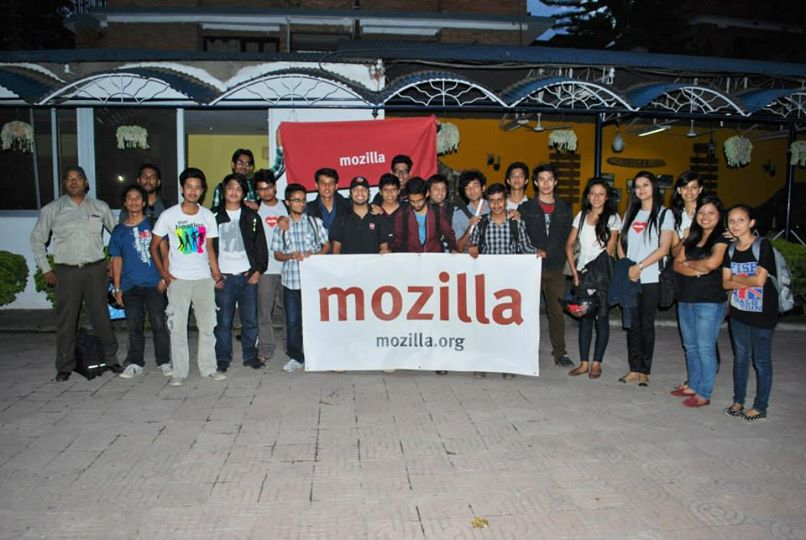

The date August 26th,2014 was a special day for the Mozilla Nepal community as we were celebrating the 2nd Anniversary of our community. In these two years our community certainly got bigger, better and louder. It was a day to be proud of and it would only seem normal to celebrate a special occasion like this in a grand fashion like Mozilla always does. This year we had something different planned. Instead of celebrating the occasion just by partying and cutting cakes, it was decided that the community members would spend their day by contributing to the Mozilla project which is the main purpose of the existence of Mozilla Nepal community.
The event was scheduled to start around 10 A.M NPT at SAP Falcha and by the time I arrived at the venue(a little bit late) the participants were already busy with their works. We had 3 parallel sessions going on. Localizers were busy localizing the Mozilla products, the developers were focused on building a webapp for FirefoxOS and the webmaker guys were making some cool stuffs(makes) using Mozilla Webmaker. The event was totally informal and the participants were provided with a WIDE VERITY of snack items. Tea, biscuits, chocolates , nachos , doughnuts , muffins... sorry I can't remember them all but I definitely tasted all of them. Me and my lazy genius friend, Nirmal Khanal, worked on a webapp named Piano Tiles. Just to be clear the lazy genius part is a compliment. Later, the participants were interviewed infront of the camera where they asked about thier ideas & work done on that day. The event ended with some nice results. At the end of the day we had more than 1000 localized string, 8 webapps(hosted in Github) and at least 4 makes in Webmaker.
After the hard work it was finally time for some celebration. We went to Rosemary & Bakery Cafe for dinner where everybody enjoyed and had wonderful time eating, singing , drinking and chatting.

You can find the other pictures of the event here
.Thanks to कुबेर for uploading them.
Comments